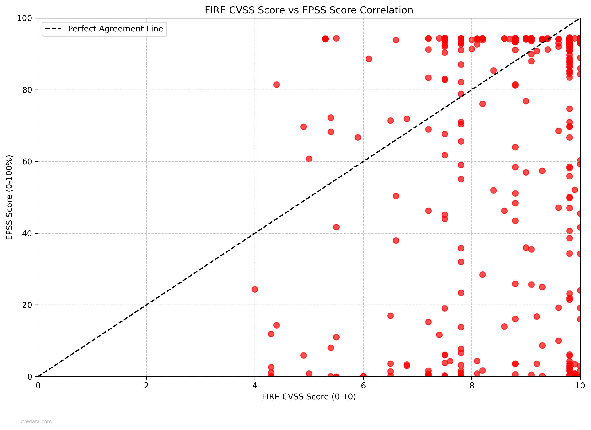
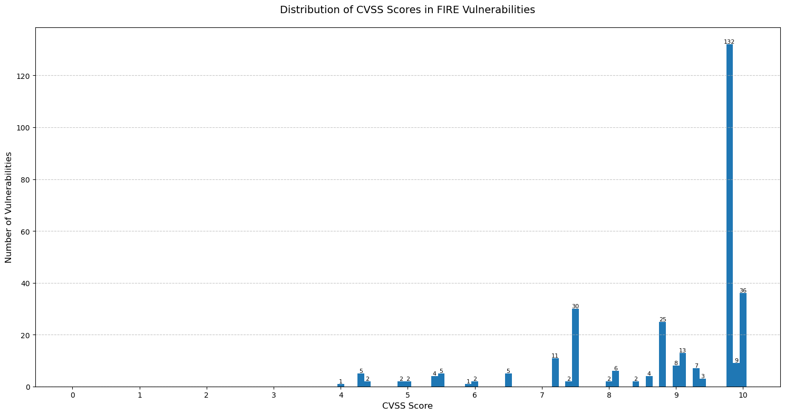
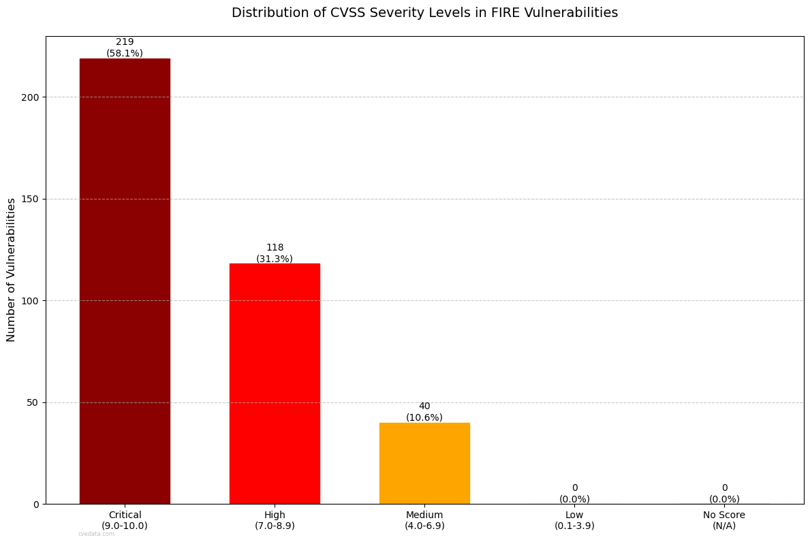
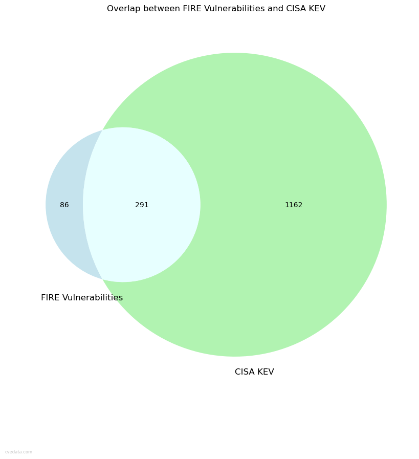
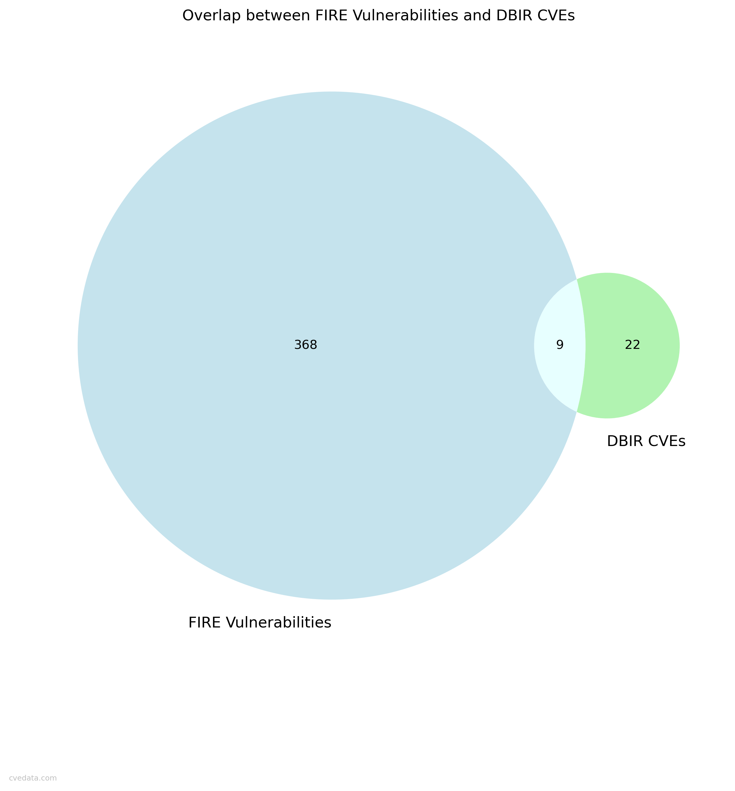
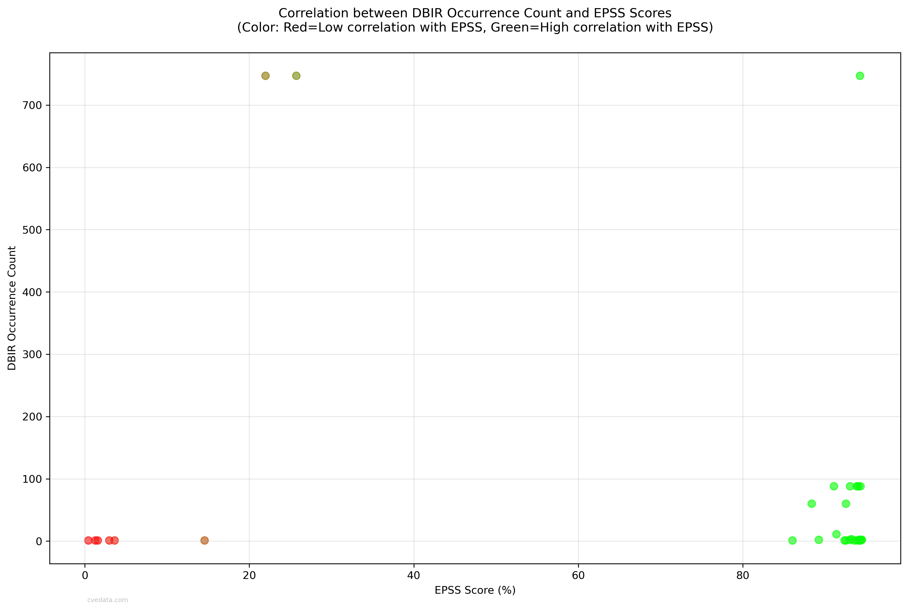
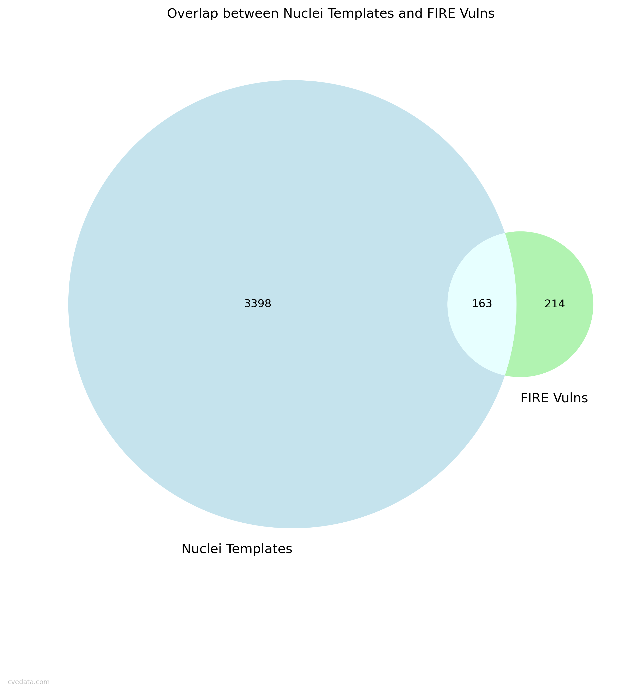
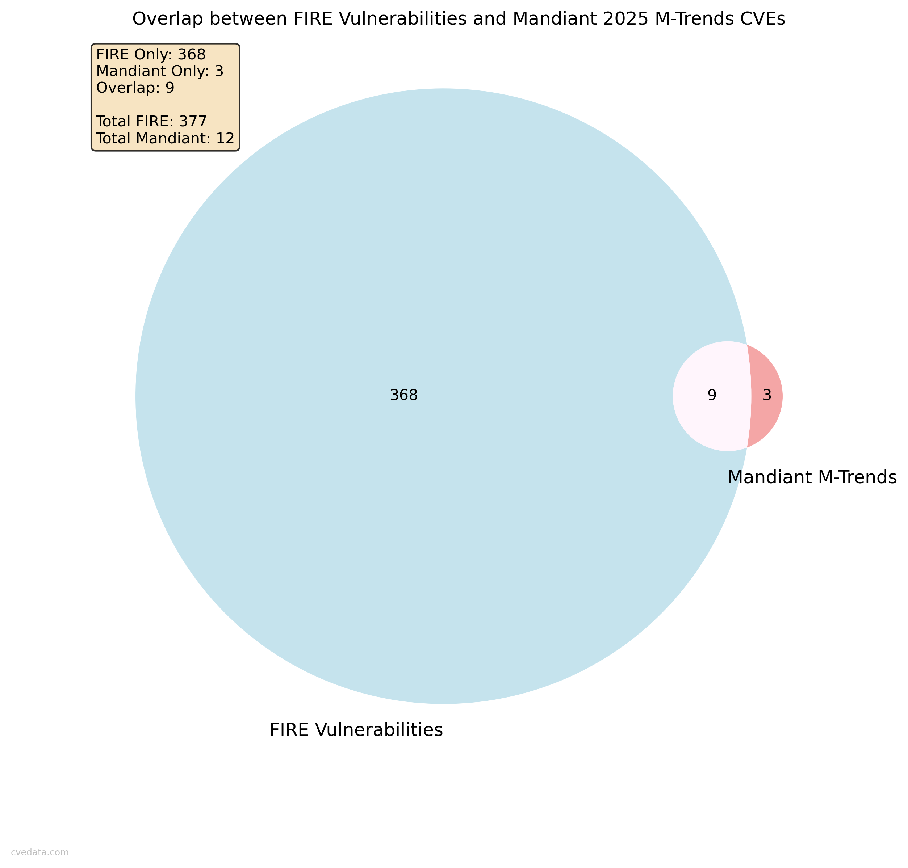
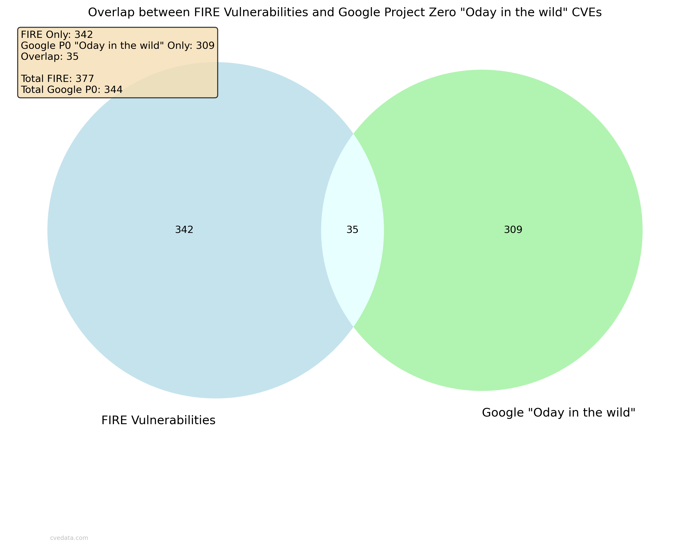

This report aims to provide a comprehensive analysis of:
Common Vulnerabilities and Exposures (CVE cvelistV5),
CISA Known Exploited Vulnerabilities (KEV),
CISA ADP (Vulnrichment),
Exploit Prediction Scoring System (EPSS),
VulnCheck (VulnCheck KEV),
KEVIntel (KEVIntel KEV) (now defunct),
Mandiant (2025 M-Trends),
National Vulnerability Database (NVD CVSS),
Metasploit (Metasploit),
Nuclei (Nuclei Templates),
Google Project Zero ("Oday in the wild"),
ExploitDB (ExploitDB),
EUVD (EUVD),
ENISA EU CSIRT Network (KEV),
FSTEC of Russia (BDU) data,
JVN iPedia (JVNDBRSS) data
and FIRE (Financial Risk Exposure) data from Insurance carrier(s).
FIRE vs EPSS Correlation

Shows the correlation between FIRE and EPSS scores, providing insight into the relationship between the two. The further from perfect agreement the worse the correlation. Only scored vulnerabilities are included.
FIRE CVSS Score Distribution

Shows the distribution of FIRE CVSS scores, providing insight into the evolution of vulnerability scoring standards.
FIRE CVSS Severity Distribution

Shows the distribution of FIRE CVSS severity scores, providing insight into the evolution of vulnerability scoring standards.
FIRE vs EUVD CVSS score comparison
Shows the comparison between FIRE CVSS and EUVD Base Score. The closer to the center the better the agreement. The further from the center the worse the agreement. Only scored vulnerabilities are included.
FIRE vs EUVD CVSS score severity distribution
Shows the distribution of FIRE CVSS severity scores compared to EUVD Base Score. The closer to the center the better the agreement. The further from the center the worse the agreement. Only scored vulnerabilities are included.
FIRE Vulns by Year
Shows the distribution of FIRE vulnerabilities by year, providing insight into the evolution of vulnerability discovery and disclosure over time.
FIRE Vendors Distribution
Shows the distribution of FIRE vendors across all FIRE vulns.
FIRE EPSS Score Distribution
Shows the distribution of FIRE EPSS scores, providing insight into the efficacy of FIRE vs EPSS.
CISA KEV-FIRE Overlap

Shows the overlap between KEV and FIRE vulnerabilities.
VulnCheck KEV-FIRE Overlap
Shows the overlap between VulnCheck KEV and FIRE vulnerabilities.
FIRE Verizon DBIR Overlap

Shows the overlap between FIRE and Verizon DBIR vulnerabilities.
Vulncheck vs Verizon DBIR Overlap
Shows the overlap between Vulncheck KEV and Verizon DBIR vulnerabilities.
DBIR Year Distribution
Shows the distribution of DBIR CVEs by publication year.
DBIR-EPSS Correlation

Shows the correlation between DBIR and EPSS scores. The more right the better the correlation. Only scored vulnerabilities are included.
FIRE-Nuclei Overlap

Shows the overlap between FIRE and Nuclei templates.
Metasploit-FIRE Overlap
Shows the overlap between Metasploit CVEs and FIRE vulnerabilities.
FIRE-Mandiant Overlap

Shows the overlap between FIRE and Mandiant 2025 M-Trends CVEs.
FIRE-Google Project Zero "Oday in the wild" Overlap

Shows the overlap between FIRE and Google Project Zero "Oday in the wild" CVEs.
FIRE-Exploit References Overlap
Shows the overlap between FIRE and CVEs with exploit references.
FIRE-ExploitDB Overlap
Shows the overlap between FIRE and ExploitDB CVEs.
ENISA EU KEV-FIRE Overlap
Shows the overlap between ENISA EU KEV and FIRE vulnerabilities.
Compiled by Robert "RSnake" Hansen. I do not guarantee the correctness of the data or images and further disclaim the reliability of the original data used or how it has been processed or represented in this report. Use your own judgement and do your own research. Use the charts with or without attribution (it's always appreciated), but if you do use it, please include me if you do any additional interesting research. Are you looking for the presentation I did on this? The deck is here, or you can find the most current version here (like this site, the deck updates automatically).